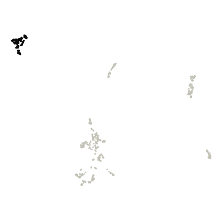
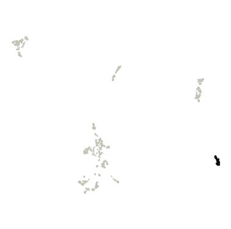
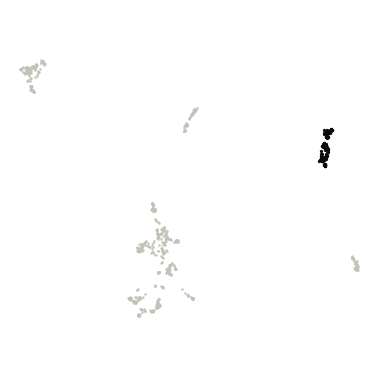
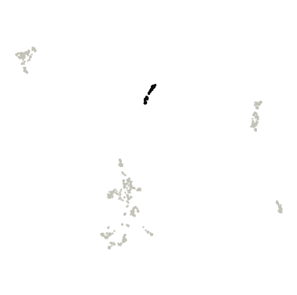
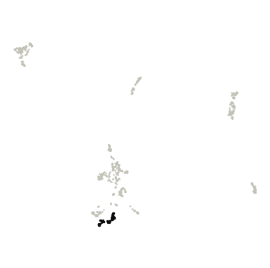
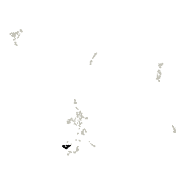
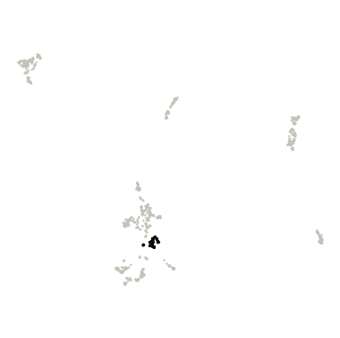
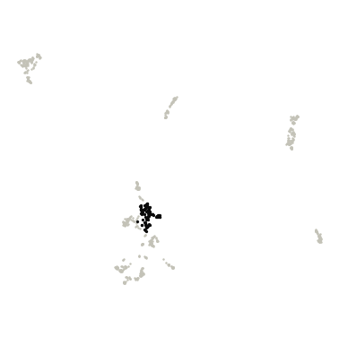
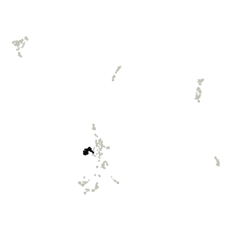

Vaginal
Vaginal genomes (VMGC species-level genome bins) shown two ways: by their DNA sequence (DNABERT-S embeddings) and by their gene content (eggNOG gene families), each with its own clusters.
DNA-embedding map (DNABERT-S)
Genomes are placed by DNABERT-S embeddings of their DNA sequence, so genomes with similar sequence composition sit close together. Treat it as a visual impression of genetic similarity, not a measure of evolutionary distance.
Hover a point for its details. Click a legend entry to hide it; double-click to show only that entry (double-click again to show all). Drag to zoom; double-click the plot to reset. Grey points are outliers that HDBSCAN did not assign to any cluster. Open full screen.
Clusters were mostly consistent across random runs; boundaries may shift slightly. Across 5 runs with different random seeds, the map gave 4-5 clusters (mean agreement 0.87, lowest 0.78; Adjusted Rand Index).
| Cluster | Genomes |
|---|---|
| Cluster 0 | 39 |
| Cluster 1 | 171 |
| Cluster 2 | 45 |
| Cluster 3 | 66 |
| Cluster 4 | 426 |
| Outliers | 39 |
Functional map (eggNOG gene families)
Here genomes are placed by what their genes do. Each genome is described by the relative abundance of 7,362 eggNOG gene families (each family's share of the genome's genes), and genomes with similar profiles (Bray–Curtis dissimilarity) sit close together.
Hover a point for its details. Click a legend entry to hide it; double-click to show only that entry (double-click again to show all). Drag to zoom; double-click the plot to reset. Grey points are outliers that HDBSCAN did not assign to any cluster. Open full screen.
Clusters were mostly consistent across random runs; boundaries may shift slightly. Across 5 runs with different random seeds, the map gave 7-9 clusters (mean agreement 0.86, lowest 0.77; Adjusted Rand Index). Agreement between these functional clusters and the DNA-embedding clusters: Adjusted Rand Index 0.27 (1 = identical groupings, 0 = unrelated), computed on the 86% of genomes that are in a cluster on both maps.
Top 10 COG gene families in each functional cluster
How they are chosen. Enrichment is the mean relative abundance of a COG family in the cluster's genomes divided by its mean in all other clustered genomes of this view. Only families present in at least 10% of the cluster's genomes are ranked, so one-off genes can't top the list. "In this cluster" is the share of the cluster's genomes carrying the family. The ranking is descriptive; no per-cluster test is applied. 95 outlier genomes are excluded. The top 50 per cluster are in functional_cluster_top_cog_terms.csv.

Cluster 0 · 129 genomes
| COG | Description | Enrichment | In this cluster | In other clusters |
|---|---|---|---|---|
| COG5107 | Domain of Unknown Function (DUF349) | 592× | 85% | 0% |
| COG4704 | Fibrobacter succinogenes major domain (Fib_succ_major) | 346× | 95% | <1% |
| COG1449 | Belongs to the glycosyl hydrolase 57 family | 299× | 76% | <1% |
| COG4797 | Motility related/secretion protein | 295× | 60% | <1% |
| COG3489 | Psort location CytoplasmicMembrane, score | 192× | 46% | <1% |
| COG1730 | unfolded protein binding | 175× | 28% | 0% |
| COG3488 | Di-haem oxidoreductase, putative peroxidase | 160× | 52% | <1% |
| COG3746 | phosphate-selective porin O and P | 155× | 89% | 1% |
| COG4206 | Psort location OuterMembrane, score | 131× | 100% | 9% |
| COG1747 | Gliding motility protein | 115× | 18% | 0% |

Cluster 1 · 55 genomes
| COG | Description | Enrichment | In this cluster | In other clusters |
|---|---|---|---|---|
| COG5624 | beta-galactosidase activity | 832× | 82% | 0% |
| COG5185 | Phage-related minor tail protein | 348× | 73% | <1% |
| COG4986 | Binding-protein-dependent transport system inner membrane component | 59× | 75% | 2% |
| COG4213 | Periplasmic binding protein domain | 33× | 91% | 7% |
| COG3879 | Bacterial protein of unknown function (DUF881) | 30× | 98% | 6% |
| COG3856 | small basic protein | 27× | 87% | 5% |
| COG4284 | Uridylyltransferase | 22× | 87% | 8% |
| COG2929 | Ribonuclease toxin, BrnT, of type II toxin-antitoxin system | 19× | 33% | 4% |
| COG0400 | carboxylic ester hydrolase activity | 18× | 89% | 11% |
| COG4850 | Uncharacterized conserved protein (DUF2183) | 17× | 89% | 10% |

Cluster 2 · 119 genomes
| COG | Description | Enrichment | In this cluster | In other clusters |
|---|---|---|---|---|
| COG4044 | May play a role in the intracellular transport of hydrophobic ligands | 391× | 67% | 0% |
| COG3281 | Trehalose synthase | 361× | 55% | 0% |
| COG5329 | Domain of unknown function (DUF4032) | 229× | 34% | 0% |
| COG4425 | Alpha/beta-hydrolase family N-terminus | 213× | 47% | <1% |
| COG4981 | Domain of unknown function (DUF3367) | 211× | 37% | 0% |
| COG5278 | phosphoserine phosphatase activity | 211× | 41% | 0% |
| COG4759 | protein conserved in bacteria containing thioredoxin-like domain | 209× | 38% | 0% |
| COG2047 | PAC2 family | 208× | 34% | 0% |
| COG4760 | Bax inhibitor 1 like | 165× | 95% | <1% |
| COG5650 | integral membrane protein | 159× | 55% | <1% |

Cluster 3 · 60 genomes
| COG | Description | Enrichment | In this cluster | In other clusters |
|---|---|---|---|---|
| COG3539 | Fimbrial protein | 2,870× | 48% | 0% |
| COG2863 | Cytochrome c | 645× | 50% | 0% |
| COG4566 | helix_turn_helix, Lux Regulon | 390× | 33% | 0% |
| COG2215 | Belongs to the NiCoT transporter (TC 2.A.52) family | 385× | 65% | 0% |
| COG2854 | ABC-type transport system involved in resistance to organic solvents auxiliary component | 377× | 90% | 0% |
| COG2853 | Actively prevents phospholipid accumulation at the cell surface. Probably maintains lipid asymmetry in the… | 366× | 88% | 0% |
| COG0565 | Catalyzes the formation of 2'O-methylated cytidine (Cm32) or 2'O-methylated uridine (Um32) at position 32 in… | 358× | 82% | 0% |
| COG3676 | manually curated | 339× | 15% | 0% |
| COG2840 | Belongs to the UPF0115 family | 334× | 80% | 0% |
| COG3121 | Pili and flagellar-assembly chaperone, PapD N-terminal domain | 327× | 53% | <1% |

Cluster 4 · 63 genomes
| COG | Description | Enrichment | In this cluster | In other clusters |
|---|---|---|---|---|
| COG4836 | Protein of unknown function (DUF1146) | 223× | 81% | <1% |
| COG4072 | Protein of unknown function C-terminal (DUF3324) | 150× | 16% | <1% |
| COG1719 | Protein of unknown function (DUF2507) | 119× | 71% | <1% |
| COG4892 | Cytochrome B5 | 104× | 41% | <1% |
| COG4814 | Alpha/beta hydrolase of unknown function (DUF915) | 101× | 87% | 2% |
| COG4837 | Protein of unknown function (DUF1462) | 95× | 17% | 0% |
| COG4903 | Competence transcription factor | 80× | 16% | 0% |
| COG4846 | COG4846 Membrane protein involved in cytochrome C biogenesis | 78× | 17% | 0% |
| COG4873 | Uncharacterized protein conserved in bacteria (DUF2187) | 78× | 17% | 0% |
| COG4347 | Protein of unknown function (DUF1405) | 78× | 17% | 0% |

Cluster 5 · 47 genomes
| COG | Description | Enrichment | In this cluster | In other clusters |
|---|---|---|---|---|
| COG4088 | SIR2-like domain | 218× | 49% | <1% |
| COG2520 | rRNA Methylase | 69× | 47% | <1% |
| COG3575 | Nucleotidyltransferase | 61× | 64% | 2% |
| COG3797 | Protein of unknown function (DUF1697) | 49× | 66% | 3% |
| COG4699 | Protein of unknown function (DUF1033) | 41× | 74% | 2% |
| COG4703 | Protein of unknown function (DUF1797) | 37× | 94% | 3% |
| COG4947 | Putative esterase | 35× | 55% | 1% |
| COG5061 | Protein of unknown function (DUF3307) | 33× | 30% | 1% |
| COG1039 | Endonuclease that specifically degrades the RNA of RNA- DNA hybrids | 28× | 79% | 3% |
| COG2514 | Glyoxalase/Bleomycin resistance protein/Dioxygenase superfamily | 27× | 66% | 3% |

Cluster 6 · 55 genomes
| COG | Description | Enrichment | In this cluster | In other clusters |
|---|---|---|---|---|
| COG5389 | Protein of unknown function (DUF721) | 171× | 40% | <1% |
| COG3847 | Flp Fap pilin component | 165× | 73% | <1% |
| COG2359 | Stage V sporulation protein S (SpoVS) | 148× | 60% | <1% |
| COG3881 | protein conserved in bacteria | 145× | 71% | <1% |
| COG1933 | Double zinc ribbon | 100× | 69% | 1% |
| COG2939 | Serine carboxypeptidase | 73× | 56% | 2% |
| COG1430 | Uncharacterized ACR, COG1430 | 54× | 67% | 2% |
| COG3947 | Transcriptional regulatory protein, C terminal | 50× | 60% | 3% |
| COG5265 | ATP-binding cassette subfamily B | 35× | 20% | 1% |
| COG2317 | Broad specificity carboxypetidase that releases amino acids sequentially from the C-terminus, including… | 34× | 75% | 6% |

Cluster 7 · 113 genomes
| COG | Description | Enrichment | In this cluster | In other clusters |
|---|---|---|---|---|
| COG1630 | NurA | 210× | 35% | <1% |
| COG2811 | AsmA-like C-terminal region | 139× | 31% | <1% |
| COG1437 | Adenylate cyclase | 124× | 50% | <1% |
| COG4091 | domain protein | 121× | 57% | <1% |
| COG1308 | Domain of unknown function (DUF4342) | 51× | 36% | 1% |
| COG1768 | Ser Thr phosphatase family protein | 35× | 74% | 3% |
| COG1915 | PFAM LOR SDH bifunctional enzyme conserved region | 34× | 25% | 1% |
| COG1244 | Elongator protein 3, MiaB family, Radical SAM | 30× | 25% | 1% |
| COG4241 | Predicted membrane protein (DUF2232) | 29× | 35% | 2% |
| COG2163 | COG2163 Ribosomal protein L14E L6E L27E | 26× | 56% | 3% |

Cluster 8 · 50 genomes
| COG | Description | Enrichment | In this cluster | In other clusters |
|---|---|---|---|---|
| COG3854 | ATPases associated with a variety of cellular activities | 271× | 78% | <1% |
| COG2715 | Nucleoside recognition | 176× | 56% | <1% |
| COG1614 | CO dehydrogenase/acetyl-CoA synthase complex beta subunit | 92× | 16% | 0% |
| COG2155 | Domain of unknown function (DUF378) | 68× | 68% | 1% |
| COG3640 | PFAM Cobyrinic acid a,c-diamide synthase | 63× | 14% | <1% |
| COG4286 | Uncharacterised protein family (UPF0160) | 46× | 16% | <1% |
| COG3874 | Sporulation protein YtfJ | 46× | 86% | 1% |
| COG3546 | Manganese containing catalase | 44× | 66% | 3% |
| COG4512 | Accessory gene regulator | 41× | 38% | 2% |
| COG5513 | Domain of unknown function (DUF4163) | 31× | 16% | <1% |